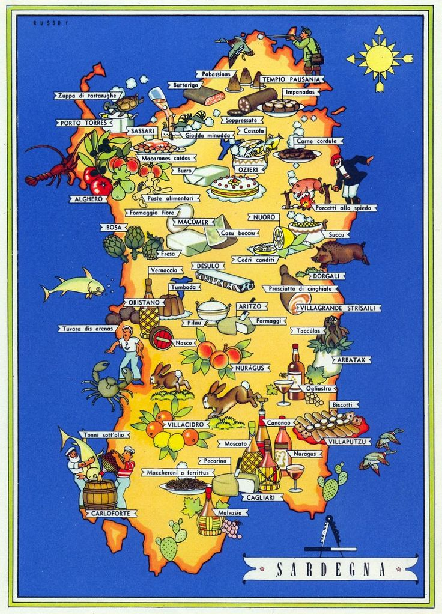
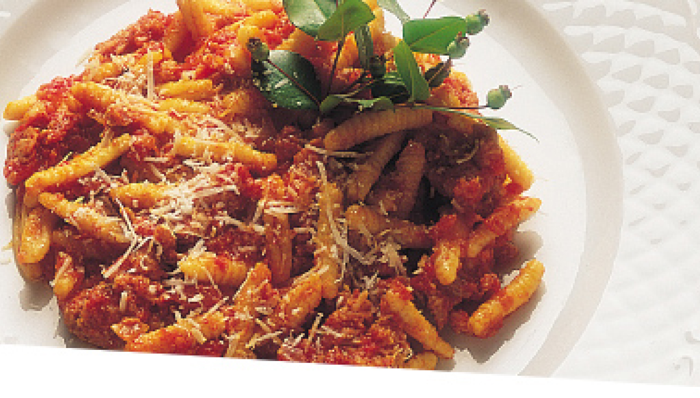
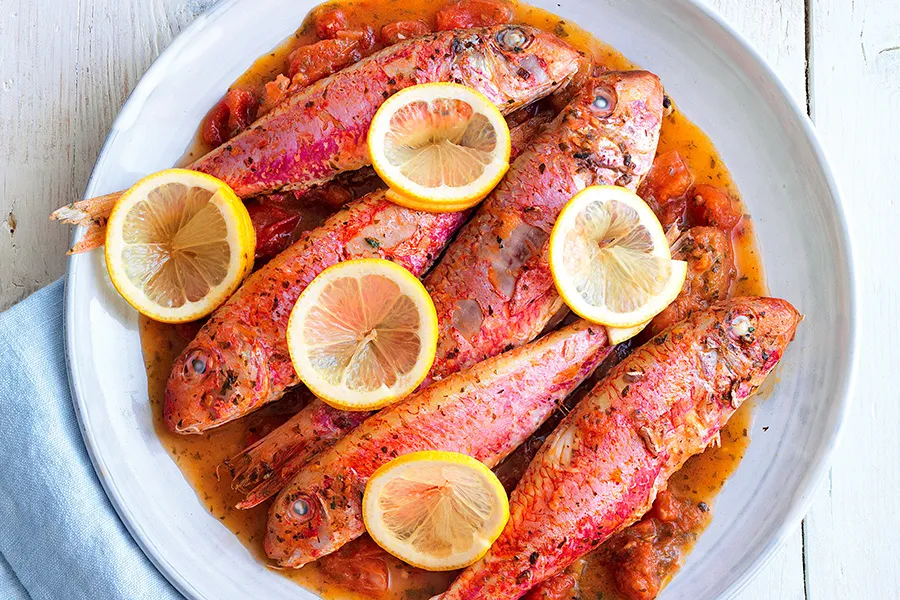
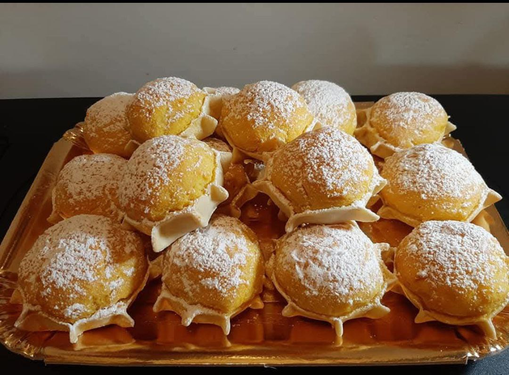

MENU' TIPICO DELLA CUCINA SARDA

1° PIATTO: "MALLOREDDUS ALLA CAMPIDANESE"

clicca qui per la ricetta
2° PIATTO: "TRIGLIE ALLA VERNACCIA"

clicca qui per la ricetta
DESSERT : "PARDULAS"

clicca qui per la ricetta
buon appetito!